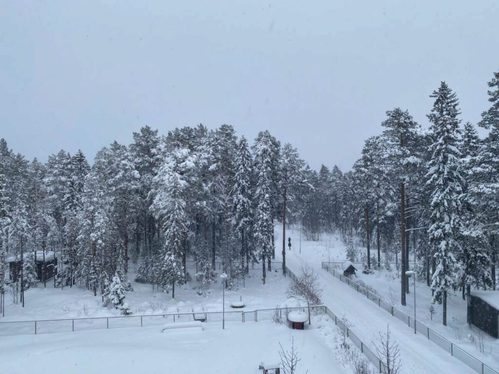
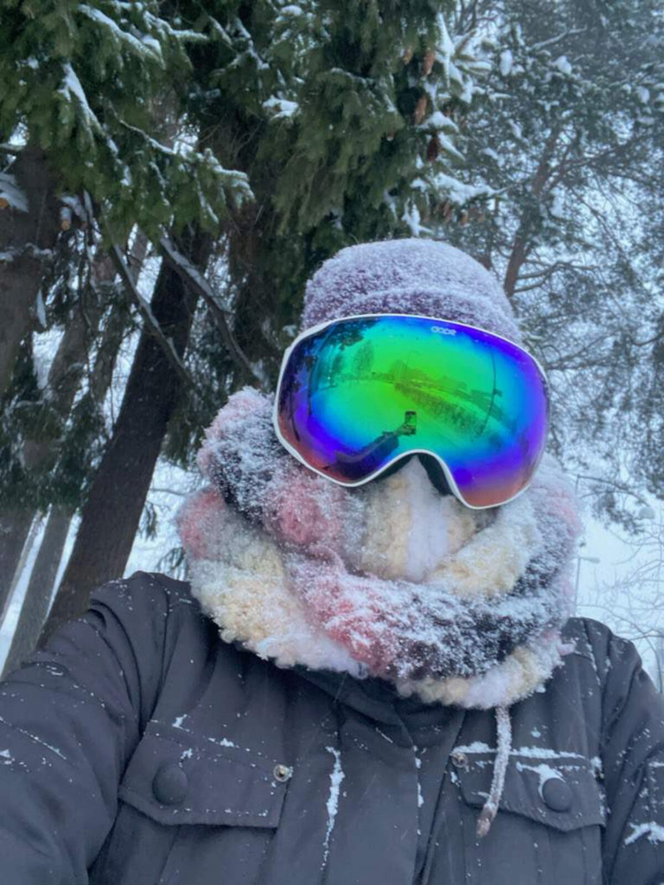
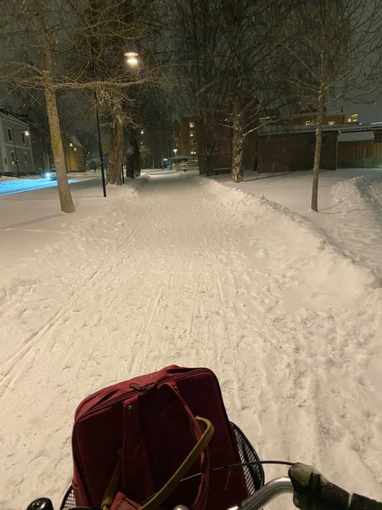

Rudolf tar sig för hornen.
Sånadär glasögon hade ju HAN
velat ha när snön yrde!

Ha en bra fredag!
Gårdagens chokela' var
Visste ni att Dom Pérignon är uppkallat
efter benediktinermunken Pierre Pérignon
som levde i Frankrike 1638–1715?
Han var mycket intresserad av vinproduktion
och hade stor betydelse för dess utveckling
och förfinande.
Det är fin och vintrig
utsikt från Beas fönster
Men det gäller att ha
rätt utrustning liksom
Rudolf tar sig för hornen.
Sånadär glasögon hade ju HAN
velat ha när snön yrde!
Somliga stirrar
Men Bea tänker man är ursäktad
när man är från Skåne
Men det går fortfarande snabbare
med cykel, totalt sett
Särskilt när man stannar
på skolan tills efter
bussarna hem slutat gå